SAFARI
Users
Bilberries
[genus Vaccinium] This genus of plants is found mostly in the Northern Hemisphere, though a few species are native to South America and some have been introduced to New Zealand and possibly Australia. Those listed here are the ones of greatest culinary interest and/or commercial importance. There are many other species closely related to each of those listed which are used locally. Naming is quite confusing as the names Blueberry, Huckleberry, Whortleberry and Bilberry are used interchangeably in different regions. In commercial production, the United States produces nearly 80% of the world's supply of berries in this genus, with Canada second at about 15%
Bilberry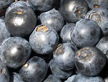 [European Bilberry, Common Bilberry, Whortleberry; Vaccinium myrtillus | Cascade Bilberry Vaccinium deliciosum]
These berries are native to Europe, northern Asia, Greenland, Western
Canada, and the Western United States. They are almost identical in
appearance to the American Blueberry, but have deep red flesh rather
than nearly colorless, are more fragrant and more tart. They are used
similarly to Blueberries, but are usually gathered wild rather than
grown commercially. Both berries and leaves are used medicinally.
Photo by Katarzyna Matylla distributed under license
Creative Commons
Attribution-ShareAlike 3.0 Unported.
Blueberry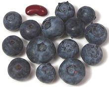 [Northern Highbush Blueberry; Vaccinium corymbosum and about 18 other species plus hybrids]
Blueberries are native to North America. The Highbush Blueberry which
accounts for most commercial production, is native from the Great Lakes
region to Nova Scotia, Canada, and in the Northeast United States
throughout the Appalachian region and as far south as Mississippi. It
has been naturalized in British Columbia, Canada and Washington State
in the west, and as far afield as Japan, Lithuania, New Zealand and
Netherlands. The photo specimens were up to 0.8 inches diameter.
Mortiño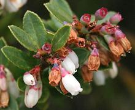 [Andean Blueberry; Vaccinium floribundum]
This shrub, which can be ground hugging or up to nearly 10 feet high,
is native to the northern Andes mountains in Bolivia, Colombia,
Ecuador and into Venezuela. The photo was taken in Costa Rica, which
also has mountains sufficiently high. The mortiño grows at
elevations of 5,900 to 12,500 feet and produces edible bluish black
berries that are eaten raw or made into preserves. It is often used
with other fruits in a dish made for the "Day of the Dead" celebration.
Photo by Franz Xaver distributed under license Creative
Commons
Attribution-ShareAlike 3.0 Unported.
Cranberry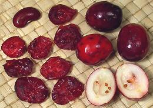 [American Cranberry, Large Cranberry, Bearberry; Vaccinium macrocarpon | Common Cranberry, Northern Cranberry Vaccinium oxycoccos | Small Cranberry; Vaccinium microcarpum] These berries have been very important to natives of the circumpolar regions of the world both as food and medicine. They thrive mainly in bogs and other areas with damp acidic soil. The berries are particularly high in vitamin C and manganese. The photo specimens are dried and fresh American Cranberries, with the fresh about 0.9 inch long and 0.68 inch across, weighing about 15 to the ounce, while the dried weigh about 52 to the ounce. The American Cranberry produces the very tart dark red berries
familiar to Americans. It is native to North America from Wisconsin
northeast to Newfoundland and as far south as North Carolina. The
Common Cranberry is a circumpolar native ranging from North Carolina
to a little above the Arctic Circle. It produces pink berries with
less harsh acidity than the American Cranberry, and is used throughout
its range. The Small Cranberry ranges from Iceland across Siberia, a
bit farther above the Arctic Circle, but not nearly as far south as
the Common Cranberry, and is not found in North America.
Red Huckleberry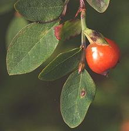 [Vaccinium parvifolium]
This plant is native from southeastern Alaska down to Central
California, and was an important food item for American Indians in
the region. The tart, red-orange berries, ranging from 0.24 inch to
0.39 inch diameter, are eaten fresh or dried. The dried are used in
sauces and teas, and the fresh are often made into jellies.
Photo by Walter Siegmund distributed under license
Creative Commons
Attribution-ShareAlike 3.0 Unported.
Lingonberry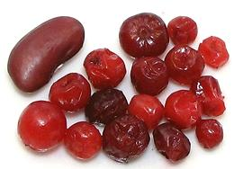 [Cowberry, Partridgeberry, Redberry, Foxberry. Vaccinium vitis-idaea]
These small red berries are native to the subarctic forest and tundra
around the world, from the US-Canadian border to the arctic circle and
in Eurasia through Scandinavia and Siberia to the Pacific and south
through Poland. In Eurasia and Canada they are usually picked wild,
and are particularly popular in Scandinavia. Some are being farmed in
the US Pacific Northwest. The bright red berries range from 0.2 to
0.4 inches diameter and are quite tart, similar to the cranberries
to which they are related. They are usually cooked and sweetened, or
simply crushed and mixed with sugar. Sauces and jams made from them
are popular with meats and spread on toast. The photo specimens,
from Lithuania, were purchased frozen from a large multi-ethnic
market in Los Angeles (Sunland).
|
Wintergreens
[genus Gaultheria] This genus of plants, about 175 species in all, is native to Asia, North and South America, and Australasia. Most produce edible berries, but most of these are insipid and not much eaten by humans. A few do have culinary uses, and many have medicinal uses.
Wintergreen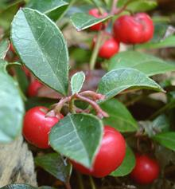 [Eastern Teaberry, Checkerberry, Boxberry, American Wintergreen; Gaultheria procumbens] This small, low growing shrub is native to northeastern North America, from Newfoundland, Canada, west to southeastern Manitoba, Canada, and south to Alabama in the United States. It bears small red berries 0.24 inch to 0.35 inch diameter, which are edible and have a minty flavor. The leaves are used as tea and for medicinal purposes. They must
be fermented for 3 days to develop the oil of wintergreen through
enzymic action before drying or processing. Wintergreen is a flavoring
used in both medicinal and non-medicinal products. An ounce of oil
of wintergreen contains as much salicylate as 171 adult aspirins,
indicating caution in its use is very important.
Photo by John Delano of Hammond, Indiana, distributed
under license
GNU Lesser General Public License v2.1, attribution required
.
Salal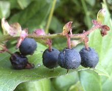 [Shallon, Gaultheria; Gaultheria shallon] This large shrub is native to North America, particularly the Western Coastal Ranges from the Alaskan Panhandle to Santa Barbara county north of Los Angeles. It bears small reddish to blue berries 0.24 inch to 0.39 inch diameter, which are edible with a unique sweet taste. Young leaves are also edible, have a unique taste, and both berries and leaves are effective appetite suppressants. The native peoples in the region used the berries as food, both
fresh and dried, and the leaves as flavorings. A major use for the
berries was to mix with Oregon
Grape to moderate its tartness. The leaves were sometimes used
to flavor fish soup. Today, the berries are used to make preserves
and pie fillings.
Photo by Darren Giles distributed under license
Creative Commons
Attribution-ShareAlike 3.0 Unported.
Snowberry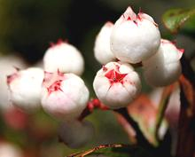 [Copperleaf Snowberry; Gaultheria hispid]
Native to wet forests and sub-alpine heath of Tasmania, Australia,
this shrub bears small, sour white to pink berries 0.31 inch to 0.39
inch diameter. The berries were eaten as "bush food" by the
aborigines, and were adopted by European colonists as filling for
tarts.
Photo by Sam Genas distributed under license
Creative Commons
Attribution-ShareAlike 3.0 Unported.
|
Prickly Heath
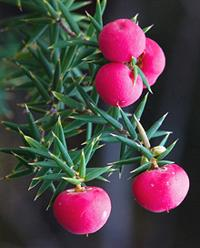 [Prickly Mingimingi, Pink Mountain Berry Leptecophylla juniperina]
Native to New Zealand and the states of Tasmania and Victoria in
Australia, these plants produce dark pink berries that are edible
either raw or cooked.
Photo by JJ Harrison distributed under license
Creative Commons
Attribution-ShareAlike 3.0 Unported.
Black Crowberry
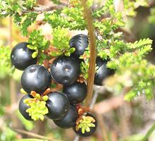 [Blackberry (Labrador); Empetrum nigrum]
Berries of this subarctic circumpolar low shrub have been a very important
food for the Inuit, Sami and other peoples of the far north. They are very
high in anthocyanin flavonoids, coloring the berries black or slightly
reddish depending on soil pH. These berries were often mixed with other
subarctic berries, particularly blueberries. The Dena'ina people of
south central Alaska like them mixed with fats or oils. The leaves, stems
and roots have been important medicinal components for the same peoples.
In Labrador, the stems and leaves are used for smoking fish.
Photo ©
Maseltov,
Wikimedia Commons, attribution required, notification appreciated.
Manzanita
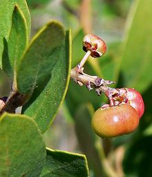 [Common Manzanita, Whiteleaf Manzanita Arctostaphylos manzanita - and about 105 other Manzanita species]
Common Manzanita can get to almost 30 feet high under ideal conditions, but 15 feet is much more common. Most manzanitas are much smaller, but all are easily identifiable by their red to reddish-brown colored bark and tangled growth habit. Of the 106 or so species, 95 live in California. The Common Manzanita is most common in coastal mountains of Northern California, but is found from Washington State all the way down to the Mexican border. Other manzanitas are found from southwestern Canada down into Mexico.
The fruits are generally less than 1 inch diameter and ripen to reddish or deep red. They are not much used for food these days, but in the past native people ground the dried fruit into powder for use as a flavoring in soup, and the fruit of a number of species were crushed and soaked in water to make a kind of cider. Fruits of the Common Manzanita are edible and reasonably sweet, but eating many of them will result in gastric distress. Photo by JJ Harrison distributed under license Creative Commons Attribution-ShareAlike 3.0 Unported.
Bearberry
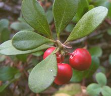 [Kinnikinnick, Radiant Manzanita, Pinemat Manzanita, Sandberry; Arctostaphylos uva-ursi]
The Bearberry is actually a Manzanita (see above), but differs from other manzanitas in that it isn't confined to the temperate western coastal mountain region of North America. Subspecies uva-ursi (Common Bearberry) is a circumpolar species, extending from the Arctic Circle down to Central California and even New Mexico, as well as Spain, Italy, Turkey, Armenia and the Himalayas - but, the farther south, the higher the altitude it retreats to. There is one sub-species (cratericola) that lives in Guatemala at very high altitudes. This shrub forms large growths, but is rarely more than 6 inches high. It is considered a good ground cover plant for coastal California.
The fruits, 1/4 to 1/2 inch diameter, are edible. Raw they have a
bitter-sweet flavor, but are sweeter cooked. They are generally
considered mealy and insipid by humans, but other animals and birds have
much more favorable opinions of them. Various parts of the plant have been
used as medicinals, and the leaves were smoked in place of tobacco by
Native Americans and European Settlers, often mixed with other leaves
and/or tobacco
Photo by Jesse Taylor distributed under license
Creative Commons
Attribution-ShareAlike 3.0 Unported.